VSancaktepe Merkez

Proje Hakkında
Ve karşınızda VSancaktepe Merkez
Hayalinizdeki huzurlu ve güvenli yaşam alanını Vakıf GYO güvencesiyle sunan VSancaktepe Merkez, yenilikçi mimarisi, geniş yeşil alanları ve çevre dostu özellikleriyle sizi ve sevdiklerinizi bekliyor.
- Lokasyon
- İstanbul İli, Sancaktepe İlçesi
- İnşaat Alanı
- 58.133,42 m2
- Ada / Parsel
- 6770 / 2
Daire Planları
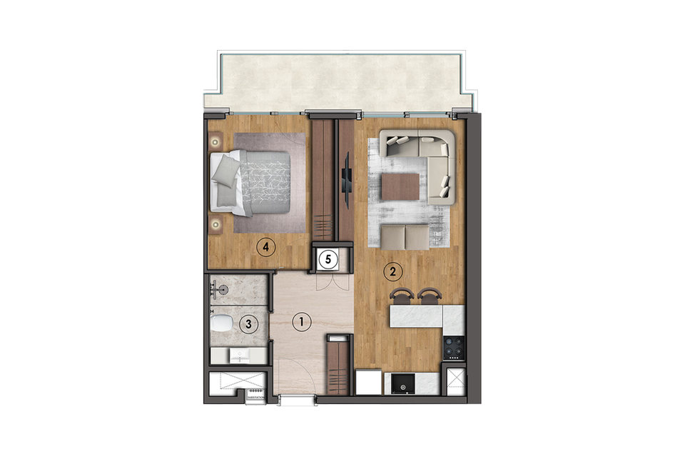
1+1 B 4 Tipi
- Net Alan47,52 m²
- Brüt Alan64,36 m²
- Satışa Esas Brüt Alan80,29 m²
Daire Planları
| Antre | 6,98 m² |
|---|---|
| Salon & Mutfak | 22,64 m² |
| Yatak Odası | 13,35 m² |
| Banyo | 3,88 m² |
| Çamaşır Nişi | 0,63 m² |
| Balkon | 8,96 m² |
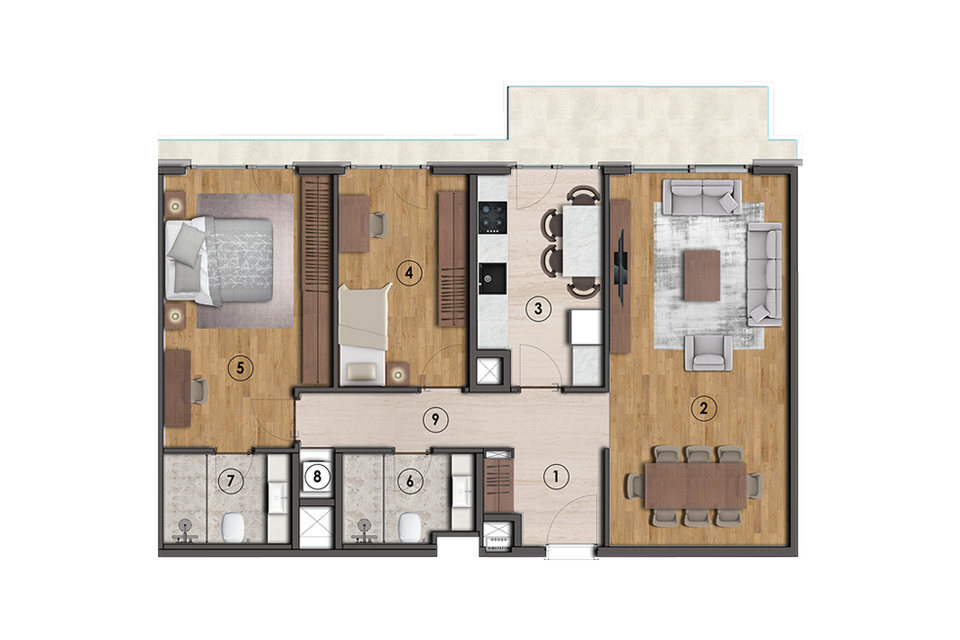
2+1 A 1 Tipi
- Net Alan84,96 m²
- Brüt Alan106,46 m²
- Satışa Esas Brüt Alan130,52 m²
Daire Planları
| Antre | 4,04 m² |
|---|---|
| Salon | 26,48 m² |
| Mutfak | 10,03 m² |
| Yatak Odası | 10,68 m² |
| E.Yatak Odası | 17,17 m² |
| Banyo | 4,57 m² |
| E.Banyo | 4,56 m² |
| Çamaşır Nişi | 0,70 m² |
| Hol | 6,73 m² |
| Balkon | 9,63 m² |
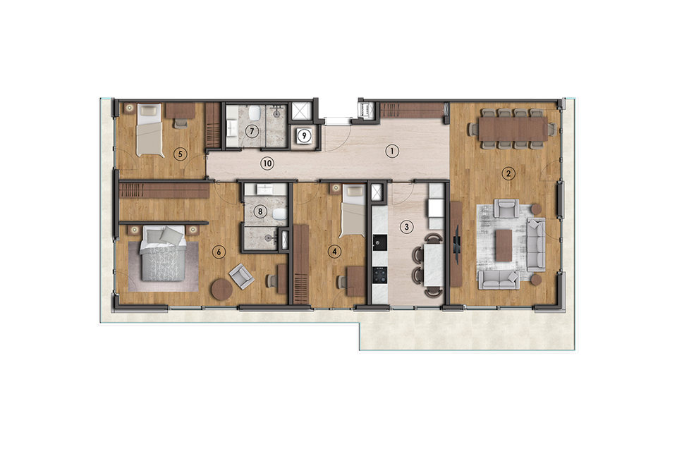
3+1 C 2 Tipi
- Net Alan117,93 m²
- Brüt Alan150,44 m²
- Satışa Esas Brüt Alan189,06 m²
Daire Planları
| Antre | 12,32 m² |
|---|---|
| Salon | 31,29 m² |
| Mutfak | 12,57 m² |
| Yatak Odası 1 | 12,87 m² |
| Yatak Odası 2 | 10,76 m² |
| E.Yatak Odası | 24,47 m² |
| Banyo | 3,91 m² |
| E.Banyo | 4,03 m² |
| Çamaşır Nişi | 0,95 m² |
| Hol | 4,69 m² |
| Balkon | 17,15 m² |
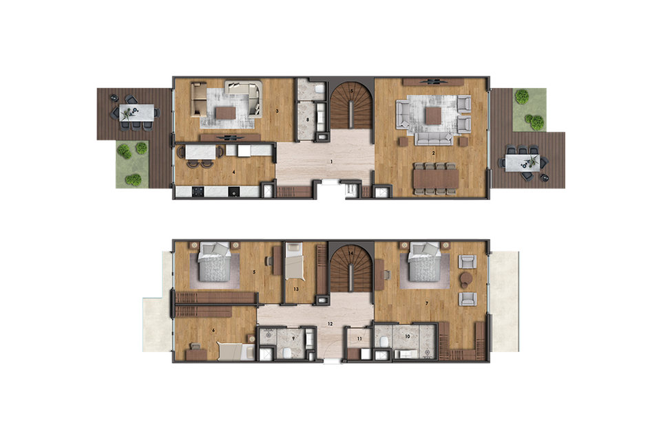
4+1 A Tipi
- Net Alan189,65 m²
- Brüt Alan240,71 m²
- Satışa Esas Brüt Alan324,67 m²
Daire Planları
| Antre | 12,61 m² |
|---|---|
| Salon | 37,51 m² |
| Oturma Odası | 21,86 m² |
| Mutfak | 14,38 m² |
| Yatak Odası 1 | 12,81 m² |
| Yatak Odası 2 | 19,04 m² |
| E.Yatak Odası | 31,17 m² |
| Banyo 1 | 4,66 m² |
| Banyo 2 | 4,00 m² |
| E.Banyo | 5,58 m² |
| İşlik | 2,32 m² |
| Hol | 9,30 m² |
| Hizmetli Odası | 7,13 m² |
| Merdiven | 7,28 m² |
| Balkon | 13,51 m² |
| Teras | 4,30 m² |
Aylık Taksit
0,00 ₺
Toplam Geri Ödeme
0,00 ₺
%2,79
%0
%0
Merkezinde Doğallık Var
Enerji verimliliği, yeşil bina standartları ve sürdürülebilir malzemelerin kullanıldığı VSancaktepe Merkez, çevre dostu bir yaşam alanı olarak öne çıkıyor. Elektrikli araç istasyonları ve güneş panelleri ile donatılmış olan bu özel alan, yağmur suyunu toplama sistemi ile doğal kaynakları koruma çabasını bir adım öteye taşıyor.
Merkezinde Güven Var
VSancaktepe Merkez, sadece bir ev değil keyifli bir yaşam alanı sunuyor. Her detayın özenle planlandığı, huzurlu bir geleceğin anahtarını sunan VSancaktepe Merkez'de, yaşamın merkezine güveni yerleştirdik.
Merkezinde Uyum Var
VSancaktepe Merkez, her biri özenle tasarlanmış yaşam alanlarında, mimari ve peyzajın mükemmel uyumunu bir arada sunuyor. Geniş avlularda komşularınızla huzurla vakit geçirirken yeşilin her tonunu bulabileceğiniz bahçelerde doğayla iç içe bir yaşamın keyfini sürün.
Merkezinde Yaşam Var
Bir araya gelmek, evin dışında da hayatın içinde olmak... VSancaktepe Merkez'de, spor salonu ve yüzme havuzu başta olmak üzere, çocuk oyun alanları ve daha birçok aktivite alanı ile dolu sosyal bir yaşamın kapıları aralanıyor. Ortak etkileşim alanları ile evden dışarıya adım attığınız her an, sosyalliğin ve birlikteliğin tadını çıkarın.
Galeri
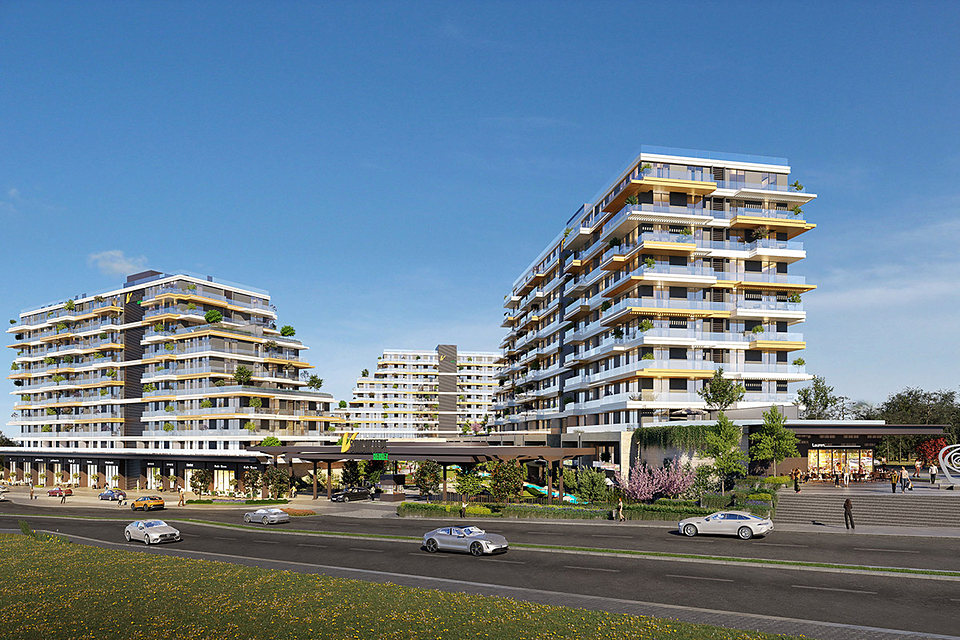
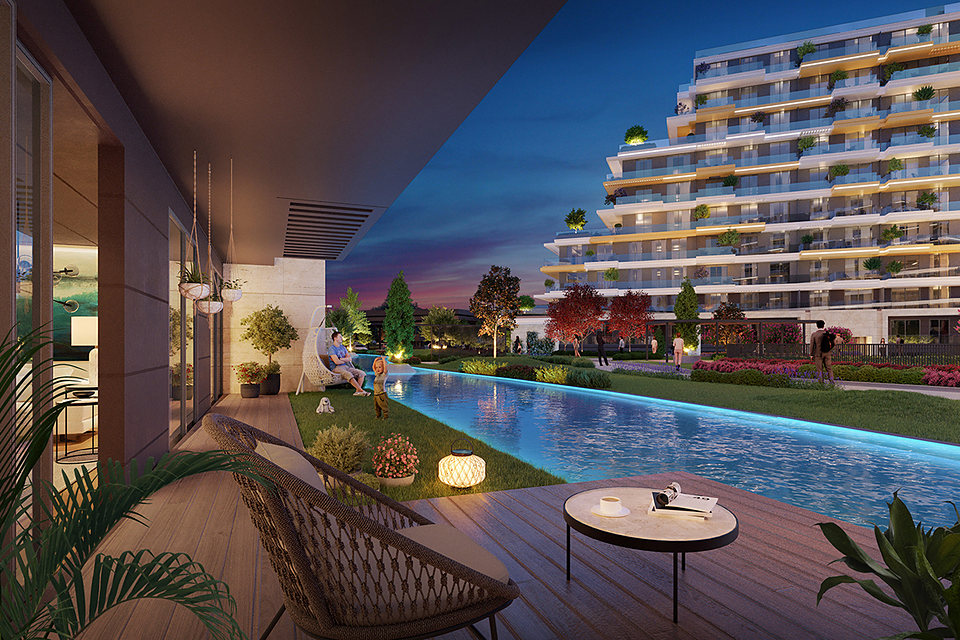
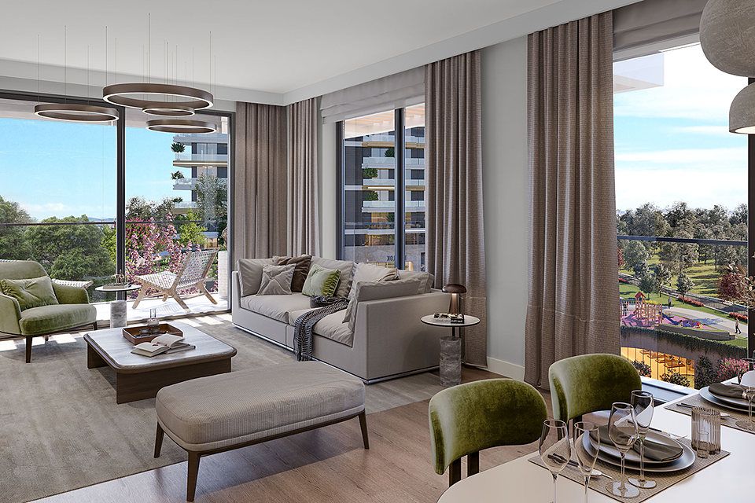
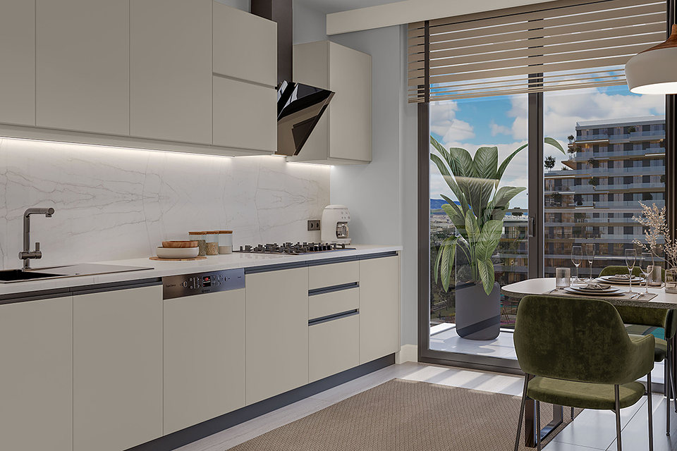
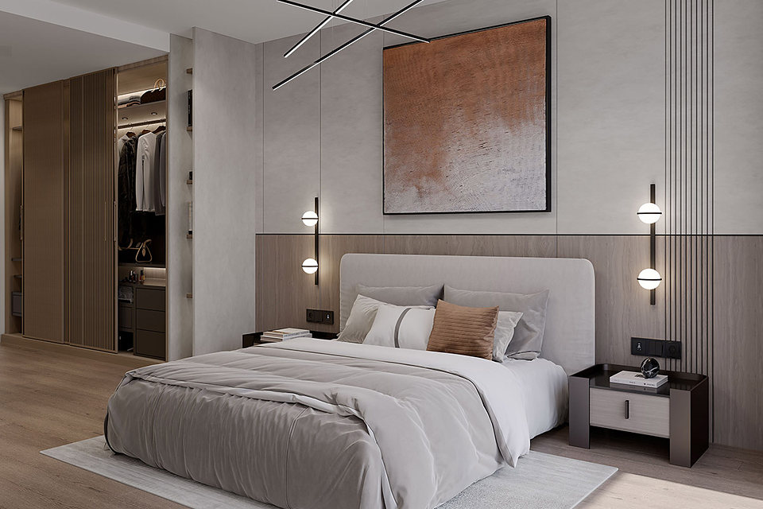
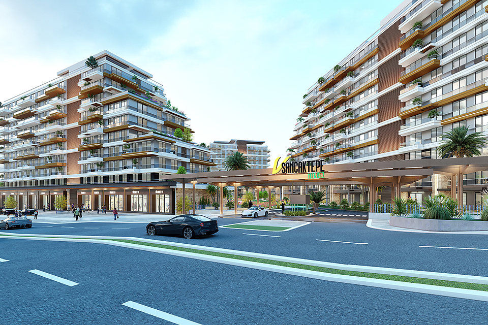
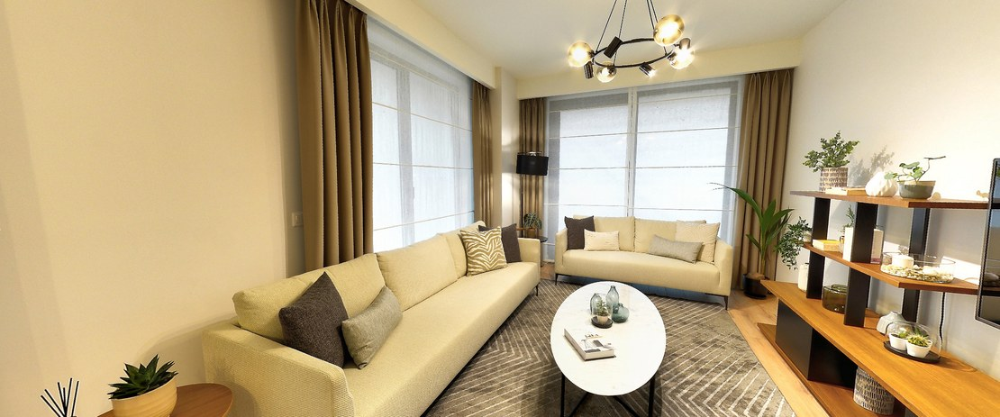
Sanal Tur

Kampanya
Teslime özel avantajlar
Anadolu Yakası’nın değerli yaşam merkezi VSancaktepe Merkez’de teslime özel avantajlardan yararlanma fırsatını kaçırmayın.
Detaylı bilgi almak ve örnek dairemizi ziyaret etmek için bize ulaşın.
Konum
Sancaktepe’de yer alan 58.133,42 m2 büyüklüğündeki arsamız, Anadolu Yakası’nın son yıllarda en çok gelişim gösteren Sancaktepe İlçesi’nin merkezinde, Sancaktepe metro istasyonuna 5 dk. mesafede, planlanan Sancaktepe Millet Bahçesi projesine komşu konumda yer almaktadır.
İletişim Formu
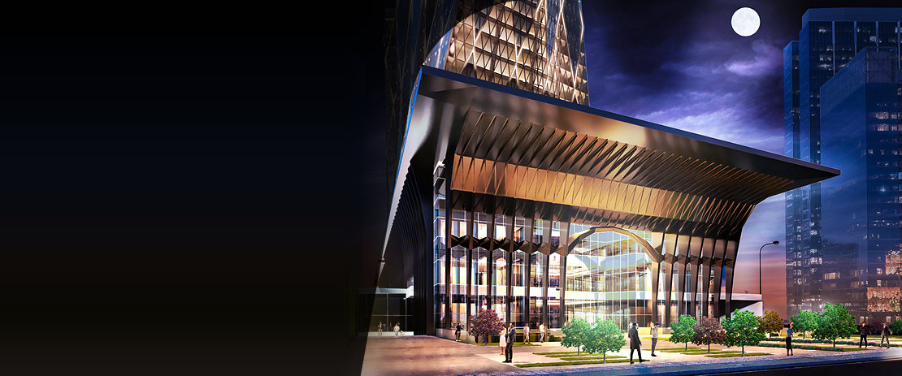
Vakıf GYO
güvencesiyle
Türkiye’nin ilk gayrimenkul yatırım ortaklığı olarak, 30 yıldır güçlü Türkiye’nin temellerini atıyoruz. Birlikte nice yıllara…